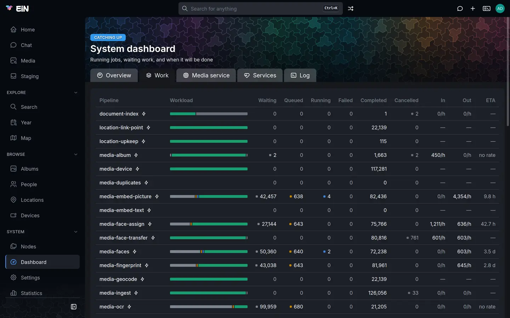
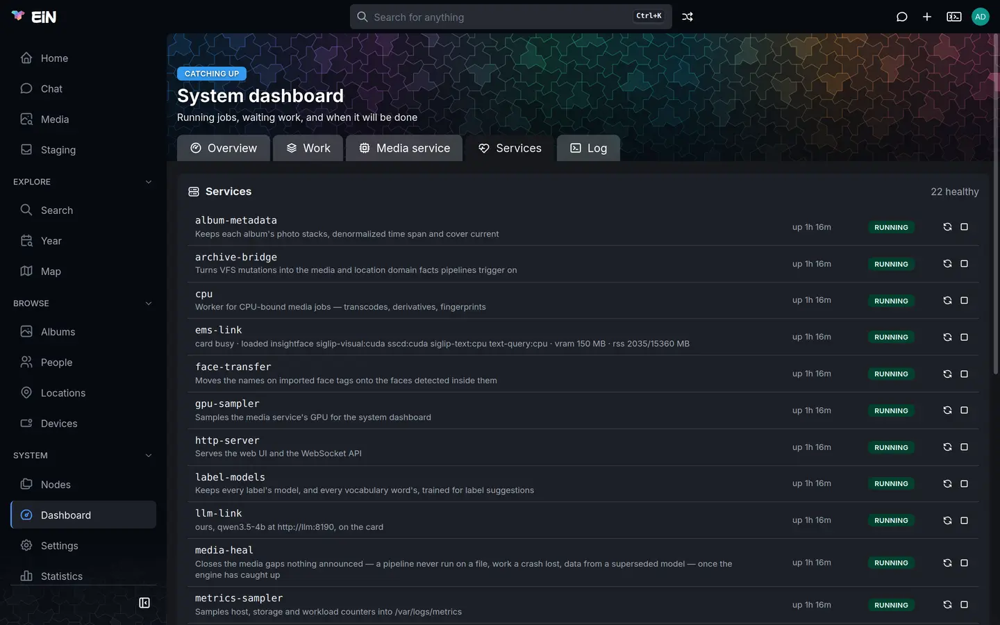
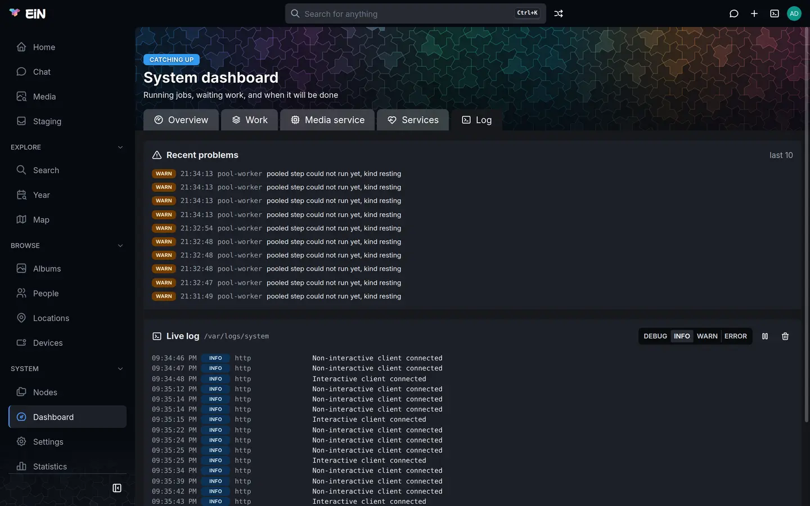

This page is for the administrator who keeps EiN running: how to tell at a glance whether it is well and keeping up, what each part of the System dashboard shows, how to ask the same questions in the terminal or from another computer, and what to do when the answer is not Healthy.
Open the dashboard
Choose Dashboard under System in the sidebar. The sidebar shows it only to administrators; the page is at /system, and someone who is not an administrator and opens that address reads the same figures without the controls to start and stop services.

The page, System dashboard, has up to three badges above its title and four tabs below it, five with the ems module installed:
| Badge | What it says |
|---|---|
| Healthy, Catching up, Stuck or Needs a person | How things stand. Hover it for the sentence behind it, such as 1,240 jobs waiting, the slowest kind done in 25m00s. |
| offline | The browser has lost its connection to EiN and is reconnecting; the figures are from the last update. |
| warming up | The sampler that records CPU, memory and disk has not written anything yet. The charts fill in within a minute of a start. |
| Tab | What it holds |
|---|---|
| Overview | The checks that are not fine, the machine's CPU and memory, the work done, storage and the instance |
| Work | Every pipeline and every kind of job: what is waiting, how fast it goes, when it will be done |
| Media service | With the ems module: the media service's own state; see The media service |
| Services | Which services run, with start, stop and restart for the administrator |
| Log | The last problems logged, and the system log as it is written |
The tab you choose goes into the address (/system?tab=work), so a link opens the same view. The pipeline figures update whenever the pipelines change; every other card asks EiN for its own figures every 10 seconds, and only while its tab is open. The badges and the alarm above the tabs are kept current on every tab. Nothing is fetched while the browser tab is hidden, and the numbers refresh as soon as you come back.
What the verdict means
The badge is the first line of the health command. It is decided in this order: a failed check first, then whether anything is waiting, then whether the waiting work moves.
| Verdict | When | What to do |
|---|---|---|
| Healthy | No check failed and nothing is waiting. | Nothing. |
| Catching up | Work is waiting, and some kind of it was done, or some pipeline instance finished, in the last hour. | Wait. After an import this can last hours; it turns to Healthy when the work is done. |
| Stuck | Work is waiting, and none of it was done and no instance finished in the last hour. | Look at the checks on Overview and the Kinds of work table on Work; see below. |
| Needs a person | At least one check failed. | Read the failed check on Overview: each one says what is wrong and, often, the command that fixes it. |
Warnings never change the verdict on their own. An install that has the ems module but no media service, or the Assistant but no language model, reads Healthy with a warning about each, and the same warnings show for a while after every start while the services load their models. An EiN with no modules has neither check.
Read the checks
On Overview, a card above the tiles lists every check that is not fine, failed ones first, each with its reason; a red edge marks a failed check, a yellow one a warning. When every check is fine the card is not there. health in the terminal lists them all, the fine ones too.
These are the checks core makes about EiN's own work, with or without modules:
| Check | State | Reason, as it reads | What to do |
|---|---|---|---|
intake |
ok | 12 matched triggers waiting to start pipeline work |
Nothing: new work about to start. |
kind <name> |
ok | 340 left, 120/h eta 2.8h, or 340 waiting, the oldest for 4m10s |
Nothing: a kind of job that is being done, or has just arrived. |
kind <name> |
warn | 340 waiting for EMS, which could not run it yet; next try in 1m30s |
With the Archive: the media service could not take the jobs; they are tried again on their own. See The media service if it lasts. |
kind <name> |
warn | 340 waiting, the oldest for 2h05m, none done in the last hour |
The worker for this kind is not getting through it. Check the Services tab and the Log tab. |
kind <name> |
fail | 340 waiting, and no worker offers this kind, the oldest for 12m30s |
See Work that nothing will run. |
failed work |
warn | 3 failed instances, run again on their own after 1 h, 6 h and 24 h |
Nothing yet: failed work is run again on its own. |
failed work |
fail | 2 instances failed again after three more runs and need a person (pipeline-instances --status failed) |
List them with pipeline-instances -s failed and see Processing and pipelines. |
input |
ok | 5 steps met input nothing can process, and will not be run again |
Nothing: a damaged or unreadable file. Running it again would give the same result. |
quiet steps |
warn | 1 running step silent for 30m00s or more: media-transcode/transcode |
A step has written nothing for a long while. It keeps running; nothing stops a step for taking long. |
queue <name> |
fail | 4 entries dropped after their delivery attempts (queue-dead /var/queues/archive-bridge: --retry or --drop) |
Look at them with queue-dead <path>, then put them back with --retry or delete them with --drop. |
How long a step may stay silent before it counts as quiet is the setting CFG_PIPELINE_STEP_QUIET_MS, 30 minutes by default.
Modules add checks of their own, through the services they run. Each is there only with its module installed, and asked only while its service runs:
| Check | From | What it says |
|---|---|---|
ems and ems … |
the ems module's ems-link service (ems-status --checks) |
Whether the media service answers, its model worker, each degradation and the card; the table is in The media service. Only ems gpu can fail. |
llm and llm model |
the Assistant's llm-link service (llm-status --checks) |
Whether the language model answers, whose it is and where it runs, and whether its model has been tried with the assistant. See The language model. |
| the service's name | any service whose check does not answer | its check did not answer, as a warning. |
When a check names a hosted language model, its reason says so plainly, for example …: questions, and what the assistant reads to answer them, leave this host.
The Overview tab
Under the checks, Overview shows the machine and the work in five parts.
- CPU and Memory tiles: the share of all the machine's processor cores in use, with the number of cores, the load and EiN's own share, and EiN's container's memory against its limit, each with a small chart of the last six hours. A tile turns amber at 75% and red at 90%.
- GPU and VRAM tiles, beside them, with the
emsmodule installed and a media service that has a graphics card: how busy the card is and its temperature, and its memory in use. They come from theemsmodule and are not there without it, without a card or without the media service; see The graphics card. - Work: Completed per hour, the pipeline instances finished in the last hour, with the count for the last 24 hours and a chart of them; the total number of instances; and Instances by state, a bar of Queued, Running, Failed, Completed and Cancelled.
- Storage: each storage tier, its path, a bar of used and free space,
% used, how much it grows per day and, when it grows,full in ~N days, in red when that is under 14 days. Tiers that share one disk say so, with the device in brackets: their free space is the same space, counted once. The database's size is in the corner. Files and storage explains the tiers. - A line at the bottom naming the instance: host, uptime, deno and database. It tells you which EiN you are looking at when you run more than one.
The storage projection is measured over the last seven days. A tier that is not growing has no "full in" figure, and a tier filling up fast is the one thing on this tab that needs action before it becomes a problem: Your data covers moving the archive to a bigger disk.
The Work tab
Work shows what the pipelines are doing; Processing and pipelines explains pipelines, how to rerun, cancel and retry work, and what each one does.


- The pipeline table has one row per defined pipeline, even one that has never run, with Workload, Waiting, Queued, Running, Failed, Completed and Cancelled. In is the work arriving for it per hour, Out what it finished in the last hour, and ETA the waiting work divided by Out; no rate when nothing finished recently,
—when nothing waits. When queue entries were dropped after their delivery attempts, a red N dropped stands above the table. Choose a row to see that pipeline's instances. - Kinds of work lists each kind of job in the work pools that has something left or was done lately: Left, Running, In, Out, ETA and Oldest waiting. A red no worker badge marks a kind nothing runs; with the Archive, a yellow waiting for EMS badge marks a kind resting because the media service could not run it, with the next try in its tooltip.
- Ongoing lists the instances running now, with how long each has run. Steps that have written nothing for the quiet time are listed above it in a yellow box.
Work that nothing will run
When jobs of some kind are ready and no running worker offers that kind for more than five minutes, a red box, Work that nothing will run, stands above the tabs on every tab, and the kind <name> check fails. The box names the pool, how many jobs are ready and for how long, and the pipelines that queue that kind.
When it names pipelines, the worker that should run the kind is not running. Open Services and start the stopped one, or read the Log tab for why it stopped.
When it says that no defined pipeline queues the kind any more, the jobs are left over from a pipeline that was removed or renamed. Cancel them with the command the box gives:
# in EiN's terminal, as an administrator pool cancel /var/pools/media --kind gpu-describe
The Media service tab
The ems module adds this tab, and it is there only while that module is installed. It shows the media service's version, its models, what it runs now and what is on the graphics card; The media service describes it.
The Services tab
Services lists the services inside EiN, the ones that are not running first. Each row has the service's name, its own status line or description, how long it has been up, how many times it has restarted (×3), and its state: running, starting, stopping, stopped, failed or disabled. The heading counts them, 21 healthy, or in red 2 down; with the Archive installed, its stopped models-second, off while CFG_MODEL_SECOND_SLOTS is 0, counts as down.


An administrator has Restart and Stop on a running service and Start on a stopped one. A disabled service has no buttons; enable it from the terminal first. Services and logs explains each service and the commands behind these buttons.
The Log tab
Log has two cards. Recent problems shows the last 10 lines logged at WARN or ERROR, newest first, or Nothing logged at WARN or above. Live log follows the system log, /var/logs/system, as it is written: choose DEBUG, INFO, WARN or ERROR to show that level and above, pause it, or clear it. While you read further up, new lines do not scroll the view away.


With the Archive, a warning such as pooled step could not run yet, kind resting means the media service was not ready for a job; the job is tried again on its own. Services and logs covers the logs and dmesg.
Ask in the terminal
Every figure on the dashboard comes from an ordinary command, and you can run the same commands in EiN's terminal or over SSH. health gives the verdict and every check:
# in EiN's terminal
healthOn an EiN with the Archive and the ems module, it reads like this:
catching up: 1,240 jobs waiting, the slowest kind done in 2h48m
warn kind transcribe 40 waiting for EMS, which could not run it yet; next try in 1m30s
ok ems EMS 3f2a91c answering, up 2.1h
ok intake 12 matched triggers waiting to start pipeline work
ok kind faces 1,188 left, 420/h eta 2.8h| What you want to know | Command |
|---|---|
| The verdict and the checks | health |
| CPU, memory and event-loop lag, with history | host-metrics |
| Free space per tier, when it fills, the database's size | df |
| Which instance, its versions and uptime | system-info |
| Each pool and kind of job: left, rates, oldest waiting | pool-stat |
| Every pipeline's counts and rates | pipeline-overview |
| The meters services add, such as the card's memory | gauges |
| The services and their status lines | service-list --detail |
| The last problems in the log | dmesg --level warn -n 10 |
| What is running now, and who is connected | ps, who |
host-metrics also shows the event loop's lag, lag p99 1.2 ms max 8.4 ms, which the dashboard does not: how long ready work waits for EiN's process. High lag with low CPU is the case where everything feels slow and nothing looks busy; Performance and sizing covers it.
Put JSON_OUTPUT=1 in front of any of them for the answer as JSON. The verdict is then one of healthy, catching-up, stuck and needs-person:
# in EiN's terminal
JSON_OUTPUT=1 health | jq -r .verdictWatch it live with top
top draws on one screen what the dashboard spreads over its tabs: a CPU graph and the load, memory, the event loop and the services' gauges, the disks, the verdict with every check that is not fine and the work done in the last hour, the running commands, the sessions, the services and the latest problems. It redraws every 2 seconds.
# in EiN's terminal
top
In the terminal panel, press Alt+M first to give it the whole window (The terminal).
| Key | What it does |
|---|---|
| q or Ctrl+C | Quit |
| ↑ ↓, k j | Scroll the list of commands |
| PgUp PgDn, Home End | Scroll a page, or to the top or bottom |
| s | Sort the commands: newest, oldest, by user or by command |
| + and - | Update less or more often, in steps from 0.5 to 60 seconds |
| p | Pause, so a list can be read; again to go on |
| Space | Update now |
top -d 5 starts at 5 seconds between updates. top -n 1 writes one frame and stops, which is what you want in a script or over ssh without a terminal.
Check from another computer
EiN sends no e-mail and raises no alert outside itself: the dashboard and health are where problems show. To look without opening the web interface, send health over SSH:
# on your own computer
ssh -p 2222 helen@ein.local healthhealth always ends with exit status 0, whatever the verdict, so a script that watches EiN has to read the verdict. The first word of the text is enough, or the JSON:
# on your own computer, for example from cron
verdict=$(ssh -p 2222 helen@ein.local 'JSON_OUTPUT=1 health' | jq -r .verdict)
[ "$verdict" = needs-person ] && echo "EiN needs a person" | mail -s "EiN" helen@example.comSSH and SFTP explains signing in with a key so a script needs no password.
Where the figures come from
The metrics-sampler service records the machine's and the work's figures, one log per series under /var/logs/metrics, and the dashboard, top and the commands above read them back. The charts therefore survive a reload of the page and a restart of EiN.
| Series | What it holds | How often | Kept |
|---|---|---|---|
cpu |
Processor time used by the machine and by EiN's container | 15 seconds | 7 days |
memory |
Memory in use against the container's limit | 15 seconds | 7 days |
runtime |
Event-loop lag | 15 seconds | 7 days |
pools |
Jobs per pool, by state | 15 seconds | 7 days |
pipelines |
Instances completed per pipeline | 1 minute | 30 days |
disk |
Free and total space per storage tier | 15 minutes | 90 days |
nodes |
How many nodes of each type | 15 minutes | 365 days |
With the ems module installed, it adds a gpu series, sampled every 15 seconds by its gpu-sampler service, for the GPU and VRAM tiles. Memory is EiN's container's own, read from its cgroup. CPU is read both ways: the whole machine's, since the media service and the language model, when installed, load it from containers of their own, and EiN's container's share of it.
How the tree has grown over the years is not on the dashboard: Statistics, under System, shows it, and anyone can open it (Home and statistics).
When something goes differently
| What you see | Why | What to do |
|---|---|---|
warming up stays, the tiles are empty, host-metrics says no metrics sampled yet — is metrics-sampler running? |
The metrics-sampler service is not running. |
Start it on the Services tab, or service start metrics-sampler, and read the Log tab for why it stopped. |
Storage says No tier data sampled yet, df says no disk sample yet — is metrics-sampler running? |
The disk is sampled every 15 minutes; right after a start there is no sample yet. | Wait 15 minutes. If it stays, check metrics-sampler as above. |
| offline next to the verdict | The browser lost its connection to EiN, for example while EiN restarts. | Wait; it reconnects by itself. If it stays, reload the page and see Troubleshooting. |
Stuck, with waiting for EMS on the kinds |
With the Archive: the media service is down, restarting or busy loading models. | See The media service. The work goes on by itself once it answers. |
Stuck, with none done in the last hour on a kind |
The worker for that kind is stopped or hangs. | Look on Services for a stopped or often restarted worker, and on Log for its errors. Services and logs. |
Needs a person, kind <name> failed |
Nothing runs that kind of job. | Work that nothing will run. |
Needs a person, ems gpu failed |
With the ems module: the media service is meant to have a graphics card and sees none. |
The graphics card. |
Needs a person, failed work or queue <name> failed |
Work failed for good, or queue entries were dropped. | Follow the command in the check's reason, and see Processing and pipelines. |
full in ~N days in red |
A storage tier will be full within two weeks at its present rate. | Free space, or move the archive to a bigger disk: Your data. |
| The CPU or memory tile is red for long | The machine's processors, or EiN's container's memory, are 90% or more in use. | Performance and sizing. |
| Dashboard is not in the sidebar | You are not an administrator. | Ask an administrator, or open /system to read the figures; health works for everyone. |